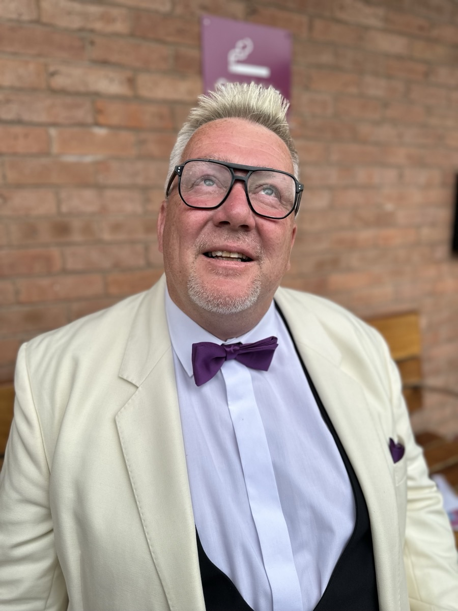
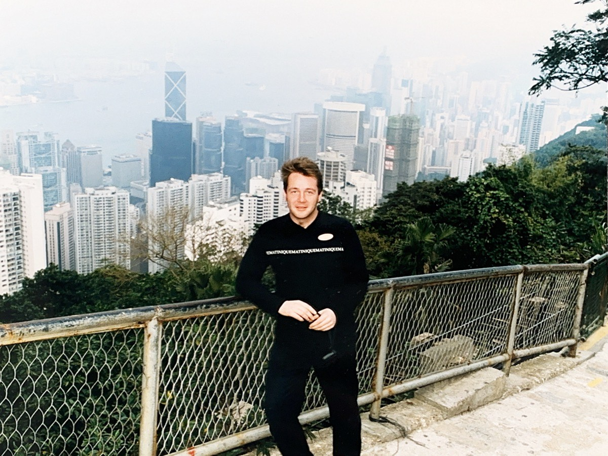
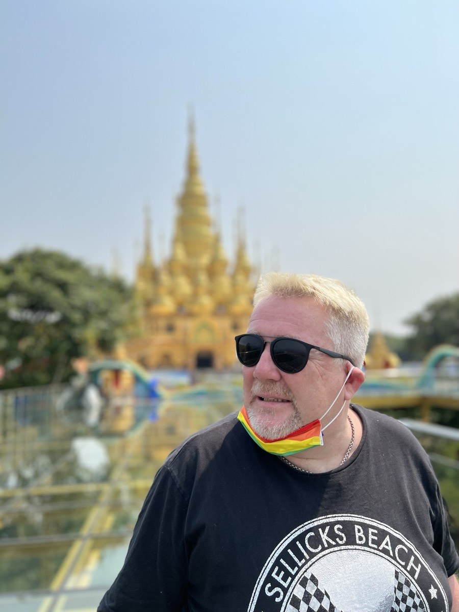

Matt Thursfield
Three careers, one educator. Published scientist turned hospitality entrepreneur — 35+ venues, 20 years. Now shaping English education at EF, opening 3 centres and training teachers across China.

Born 1965 in Birmingham, UK. Attended Bishop Vesey's Grammar School — founded 1523, one of Britain's oldest and most prestigious schools. Grew up amid Birmingham's musical explosion — crossed paths with Robert Plant, Bev Bevan, Toyah, UB40, The Specials.
In 1983, moved to North Wales. BSc Marine Botany from Bangor University — the only person in the world to graduate in that subject in 1986. PhD in Aquatic Ecology followed. When his supervisor fell ill, Matt built his own research network across British scientific institutions, collaborating on the landmark Lynne Brianne Project.

Publications
- Lake acidification: consequences for aquatic productivity in Snowdonia — Br. Phycol. J., 1990
- In situ manipulation of pH: effects on epilithic primary productivity — Br. Phycol. J., 1990
- Simulated acidification and its effects on epilithon — Br. Phycol. J., 1990
- Effects of acidification on primary productivity of upland streams — PhD Thesis, 1994
When research funding vanished, Matt pivoted. 1987: turned a failing hospitality unit into a five-figure profit in two years. 1991: leased first bar. 20 years. 35+ venues. Chaired two business associations. Debated policy on TV and radio. 1999: led a delegation to the European Parliament in Brussels.
At Whitbread (Costa Coffee), opened a new venue that repaid its entire investment in 6 months — outperforming the Dubai flagship.
2010: reinvented. Earned teaching qualification during lunch breaks. Beijing kindergarten → Chongqing primary school → EF Education First (2012).
Teacher → Senior Teacher → Centre Education Manager → Senior Director of Studies (2021). Opened 3 new centres. Initiatives — Beginner Life Clubs, metrical posters, observation forms — went national. Star Teacher ×2, Star Manager ×1.
Designed training materials for World University Games volunteers. Co-led the Rural English Teacher Training Program with China's National Center for Educational Technology.

BSc Marine Botany
Only person worldwide to graduate in this subject in 1986.
PhD Aquatic Ecology
Published 4 papers. Built cross-institutional research network.
Hospitality Entrepreneur
European Parliament delegation, 1999. Business association chairman.
Catering Manager
Venue repaid investment in 6 months.
Career Change
Earned during lunch breaks. Moved to China.
Senior Director of Studies
3 centres opened. Star Teacher ×2. Star Manager ×1.